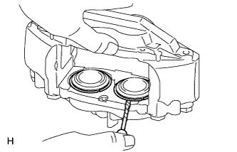
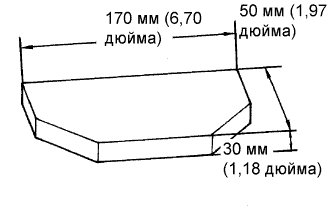
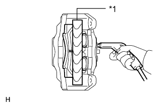
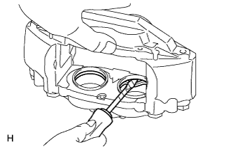

ПЕРЕДНИЙ ТОРМОЗ > РАЗБОРКА |
| 1. СНИМИТЕ УСТАНОВОЧНОЕ КОЛЬЦО ПОРШНЯ ЦИЛИНДРА ПЕРЕДНЕГО ДИСКОВОГО ТОРМОЗА |
|  |
С помощью отвертки снимите 4 установочных кольца переднего дискового тормоза с 4 защитных колпачков тормозного цилиндра.
| 2. СНИМИТЕ ЗАЩИТНЫЙ КОЛПАЧОК ЦИЛИНДРА |
С помощью отвертки снимите 4 защитных колпачка с колесного тормозного цилиндра дискового тормоза.
| 3. СНИМИТЕ ПОРШЕНЬ ПЕРЕДНЕГО ДИСКОВОГО ТОРМОЗА |
Установите одну из колодок дискового тормоза.
|  |
Поместите деревянную пластину между поршнями тормозного цилиндра переднего дискового тормоза, чтобы предотвратить их отскакивание.
Постепенно подавая воздух с помощью пневматического пистолета, извлеките 2 поршня тормозного цилиндра переднего дискового тормоза из тормозного цилиндра.
|  |
Снимите тормозную колодку переднего дискового тормоза и деревянную пластину.
| *1 | Деревянный брусок |
Предварительно установите 2 снятых поршня тормозного цилиндра переднего дискового тормоза. Затем установите тормозную колодку переднего дискового тормоза со стороны, куда были предварительно установлены 2 поршня тормозного цилиндра переднего дискового тормоза.
Поместите деревянную пластину между поршнями тормозного цилиндра переднего дискового тормоза, чтобы предотвратить их отскакивание.
Постепенно подавая воздух с помощью пневматического пистолета, извлеките 2 поршня тормозного цилиндра переднего дискового тормоза с другой стороны тормозного цилиндра.
| 4. СНИМИТЕ УПЛОТНЕНИЕ ПОРШНЯ |
|  |
С помощью отвертки снимите 4 уплотнения поршней с колесного тормозного цилиндра дискового тормоза.
| 5. СНИМИТЕ КОЛПАЧОК ПРОКАЧНОГО ШТУЦЕРА ПЕРЕДНЕГО ДИСКОВОГО ТОРМОЗА |
| 6. СНИМИТЕ ПРОКАЧНОЙ ШТУЦЕР ПЕРЕДНЕГО ДИСКОВОГО ТОРМОЗА |